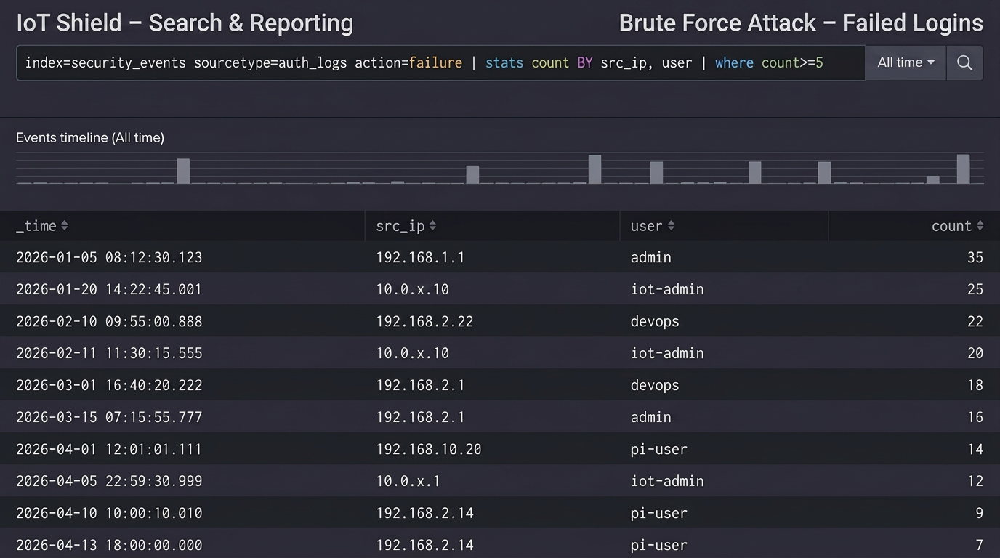
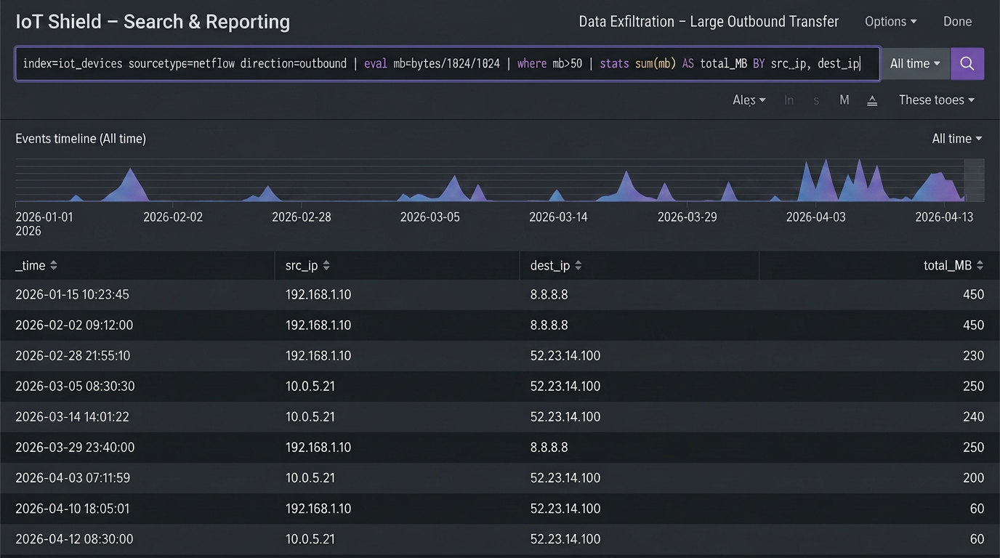
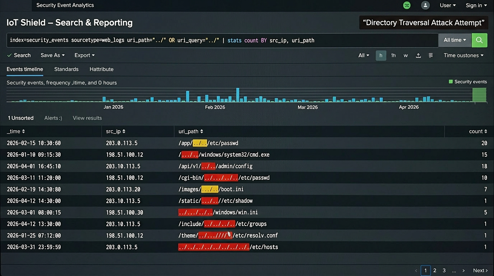
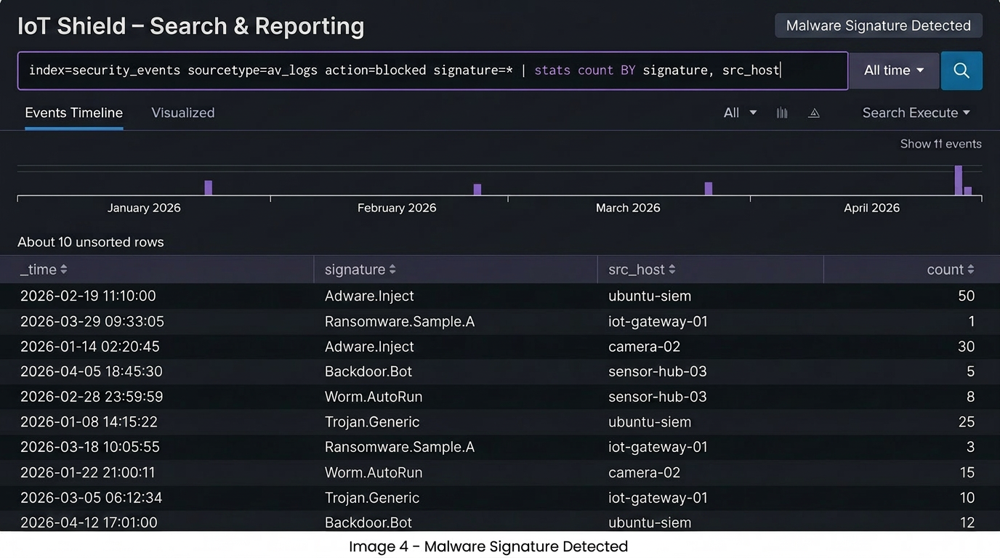
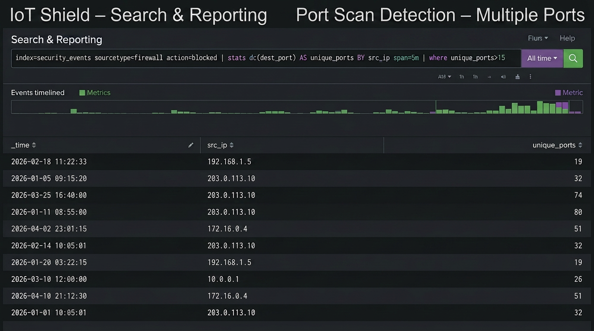
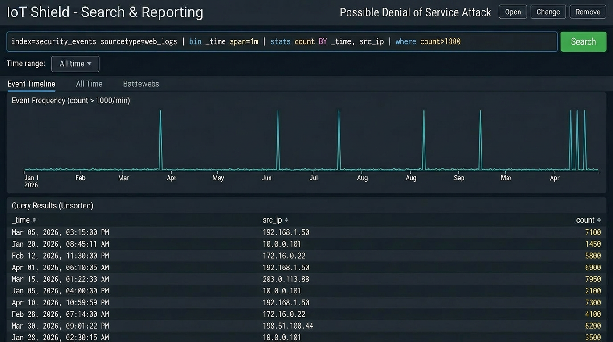
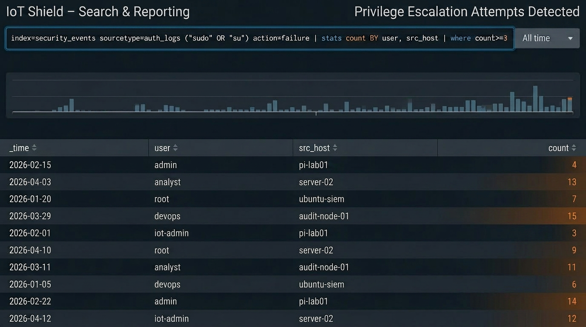
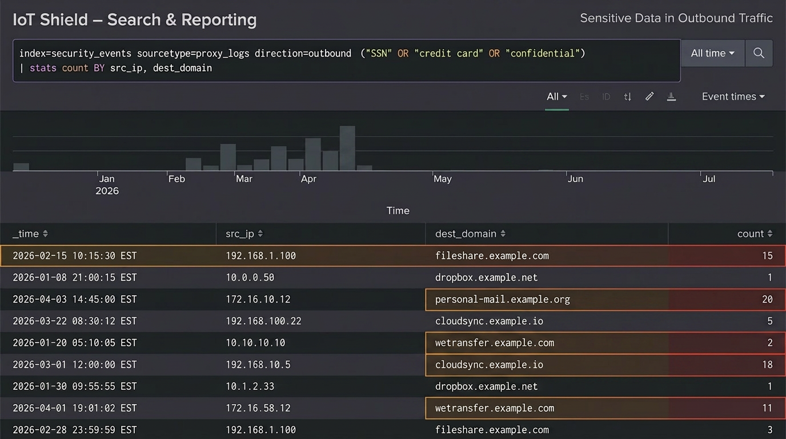
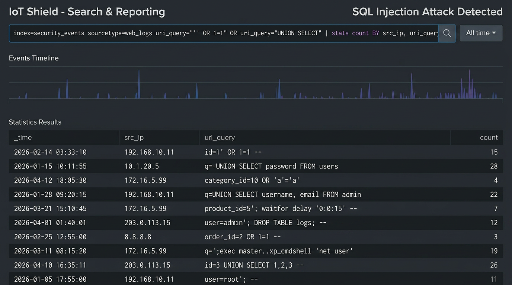
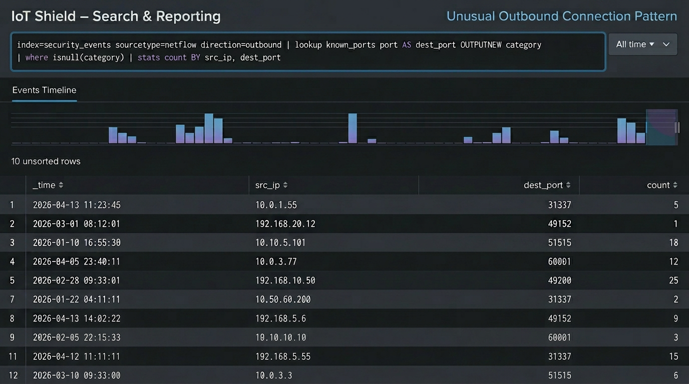

Cybersecurity Monitoring
IoT Shield
IoT Shield is a lightweight cybersecurity monitoring platform designed to help organizations detect, analyze, and respond to threats across IoT and network environments.
The system combines affordable edge hardware with enterprise-grade monitoring tools to provide real-time visibility into suspicious network activity without requiring expensive infrastructure.
The Problem
Many organizations rely on IoT devices but lack affordable monitoring tools capable of detecting security threats across distributed environments.
- Limited visibility into IoT device activity
- High cost of traditional SIEM platforms
- Lack of centralized monitoring
- Slow detection of cyber attacks
- Fragmented security tools
Our Solution
IoT Shield bridges the gap between lightweight devices and enterprise-level monitoring. Edge devices simulate IoT traffic and forward logs to a centralized security dashboard where threats can be detected and analyzed.
The system enables security teams to monitor activity, identify attack patterns, and respond to incidents faster using automated alerts and dashboards.

Key Features
IoT Shield provides organizations with real-time visibility into IoT activity, helping detect suspicious behavior and improve cybersecurity monitoring.
-
1
Real-Time Monitoring
Monitor IoT network activity continuously and detect unusual behavior instantly.
-
2
Centralized Dashboard
All security logs and alerts are collected and analyzed in one monitoring interface.
-
3
Threat Detection
Identify brute-force attacks, suspicious network traffic, and intrusion attempts.
-
4
Custom Alerts
Automated alerts notify administrators when security threats are detected.
Detection examples
Different Attacks
Dashboard views from IoT Shield illustrating how distinct attack patterns appear in monitoring—from failed logins and port scans to injection attempts and data exfiltration.












Platform walkthrough
How IoT Shield works
IoT Shield is a capstone security project that simulates a real-world IoT monitoring environment using low-cost hardware and open-source tools.
Project summary
How it works
Three developers each handled a distinct role — one running Splunk Enterprise as the SIEM on a desktop Ubuntu VM, one simulating IoT devices (thermostat, camera, smart lock) via Python scripts on a Raspberry Pi, and one launching attacks using Kali Linux tools like Nmap, Hydra, and data exfiltration scripts. Logs flow from the simulated devices through a Raspberry Pi forwarder into Splunk, where 12 custom detection rules flag threats in real time.
What it detected
Over 900 security alerts were generated across a January–April 2026 lab window, covering port scans, brute force attempts, SQL injection, XSS, DoS, malware signatures, and data exfiltration — every simulated attack was mapped to at least one alert.
Key results
- 3 custom dashboards built for operations, security alerts, and threat analysis
- 12 alert categories covering the full attack surface
- Raspberry Pi proven effective as a lightweight log forwarder
- Full attack-to-alert visibility achieved end-to-end in the SIEM
- Desktop hardware recommended for heavy analytics workloads
Built in 6 sprints, covering network design, Splunk setup, device simulation, attack tooling, detection rule development, and final tuning and documentation.
FAQ
Frequently Asked Questions
-
A lightweight cybersecurity monitoring service that gives you real-time visibility into your IoT and network activity.
-
No. IoT Shield is designed to be affordable and runs on lightweight hardware without sacrificing capability.
-
Suspicious activity like brute-force attacks, unauthorized access, and unusual network behavior.
-
Not at all. We handle setup, configuration, and deployment so you can start monitoring quickly.
-
Any organization using IoT devices that needs better security visibility without high costs.
-
Yes. You’ll receive real-time alerts when threats are detected so you can act fast.
-
Yes. IoT Shield is scalable and can expand as your network grows.